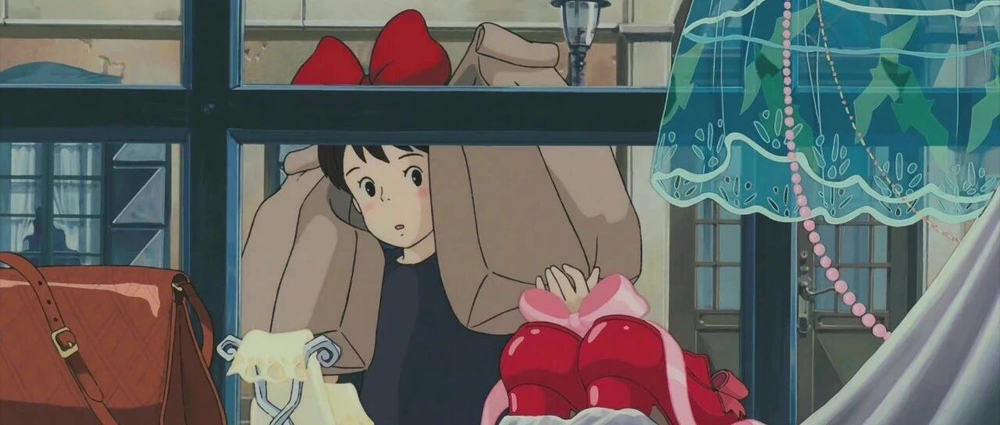

26岁，我打算正式退休了！
点击关注 秋秋很开心

大家好，我是秋秋～
很开心，这次以新的身份和新的状态跟大家见面了。
其实我也纠结，要不要把我的真实状态、想法，都坦诚的分享出来。
我怕别人会说你小小年纪、凭什么退休啊？
你有多少钱？
你以后就不劳动了？不无聊吗？
今天就好好聊一聊这件事。
我96年，26岁，很认真的说：我财务自由，我退休了！
1.你有多少钱
财务自由需要有多少钱？
百万千万资产的人随处可见，但我希望大家先区别一个概念：财富自由和财务自由。
财富自由：（理想的状态）有大把的钱，随便花，想去哪去哪，想买啥买啥。
财务自由：不为生活开销而努力为钱工作的状态，被动收大于支出。

（百度百科关于财务自由的定义）
我从来没想过，达到财富自由，我知道欲壑难填，即使有大把的钱，也不“够”花：
1、欲望是无止尽的，只要有欲望多少钱都不够；
2、靠外物很难持久开心。有钱之后我们还会追求情感，健康，平静的心，这些是要靠智慧和努力获取的。
我说的财务自由，就是说你不需要靠工作赚钱，被动收入大于你的支出。
有人说，我一个月花1000块钱，放银行利率4%（这个我去存了很多商业银行还有4%的利率，20w起存），存款30万，那一年利息1万2，也够生活费了。
那非常容易实现啊！可也只是温饱自由。
确实是，但上面说的够“生活费”是所有开销，甚至你还要多留一点。
我是观察了我最近2年的生活状态，每个月开销在一万左右，按照这个存钱的。
我当下银行大额存单利息，一年能有大几万，够我所有吃喝住行开销，达到自己标准的财务自由了。
2.你以后不工作了吗？
这里引入一个新概念，FIRE运动。
FIRE是Financial Independence Retire Early 的缩写。就是字面意思，包含两个重要部分：财务独立➕提早退休。

执行这个计划的人，每年靠4%的被动收入就够支出生活所有开销。
这4%的，其实已经考虑了通货膨胀因素（定投基金以及稳健类的债基收益是大于4%的，这块以后写文章再细说）。
根据情况不同，我这类Fire人群也细分了4种：

像我本身就爱做视频写文章，在fire之前全网就有100万左右粉丝。
我发现，不为了钱而工作之后，时间很自由，创作欲望反而大幅度增加。
我是属于第四种：海岸Fire。
昨天也发了视频，数据还不错[跳跳]

我还注册了新账号，计划在豆瓣和小红书记录我的fire生活，这一切都不会让我感到紧张，反而很有乐趣。

（我的豆瓣账号：26岁秋秋的fire）
我看《纳瓦尔宝典》，退休就是不会为想象的明天牺牲今天，财富也不会就此停止。
所以Fire之后，不是放弃你原来的生活，只是多了很多选择权和不为金钱工作的自由。
✨
现在，我的快乐来更多的来源于对自己能力的探索。
我也很愿意分享，遇到很多志同道合的朋友。

（我在群里和朋友分享读书）
最后，再回答一个问题。很多人说钱会贬值啊，你之后怎么办？
首先，我fire并没有失去什么。
我的能力、我的账号、我的爱好都还有，我会继续账号，我本来就喜欢分享写作这些。
只是现在做出于爱好，能顺便赚钱也不错，不赚我有被动收入。
引用《纳瓦尔宝典》这本书里面的：

其次，我已经存了一些。
我想过，我现在26岁，即使5年后我31岁，这几年我热于探索，稍微赚点钱。
5年后，我的资产还是正增加几十万的，应该比我打工要好。
要说疾病、天降祸患这些，工作也一样会发生。
而未来有什么不好，整个社会都不太好，有存款还是比没存款好一些。
✨
现在我周一到周五的作息都是10点起床，10.30早午饭，11点到14点看书。
午休一会14.30开始工作到16点。
16-17点晚饭，之后就看看剧运动一下。
我男朋友晚上8.9下班，再一起聊聊天之类的～
心情真的很好！
以后就继续跟大家分享我的fire生活还有学习日常啦。（我真的挺勇敢的哈哈
往期精彩内容：
作者介绍：
秋秋，26岁开始退休了！自由职业者，喜欢写东西、拍视频。希望能和你分享，学习、成长、生活中的小美好～

原创文章，转载请告知本人并标注来源
工作联系：17865514429 （微信）
请注明来意 :)
@小红书、抖音、快手：秋秋很开心
喜欢记得星标，让我们一起成长